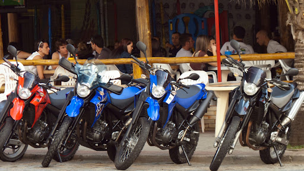
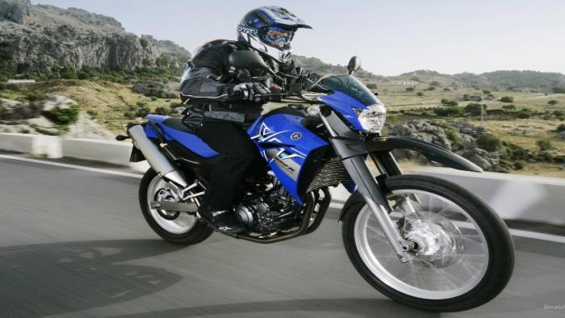
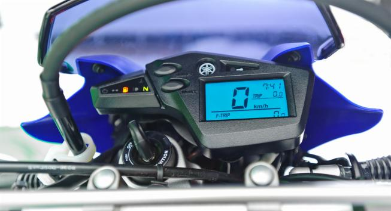
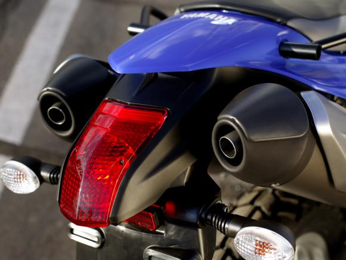
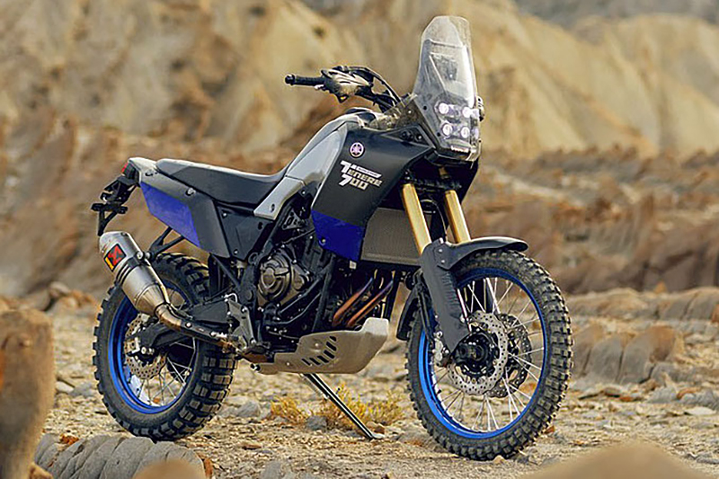

CURIOSIDADES:
- Vendas: Ao longo dos 13 anos em que esteve nas lojas (2005-2017), a XT 660R foi um sucesso: 30.110 unidades foram emplacadas, segundo dados do Denatran. Uma média de 2.316 vendidas anualmente, o que lhe garantiu a liderança do segmento Maxitrail por muitos anos. 
- Torque: Mas foi seu torque máximo de 5,95 kgf.m atingido a 5.520 giros que “conquistou” corações. Quem nunca sentiu “o soco no estômago” de um monocilíndrico de grande capacidade não sabe o que está perdendo. Basta girar o acelerador para disparar na frente dos outros carros e motos no semáforo. Ou ainda aproveitar o torque que, de acordo com os fãs, faz com que ela suba “até parede”. Pilotar a XT 660R com tranquilidade é quase impossível, a cada arrancada, uma nova emoção 
- Modernidade: Embora siga a receita clássica das trails, a XT 660R tinha um design atual e tecnologia moderna. O ar de modernidade vinha da injeção eletrônica e também do painel completamente digital, até então incomum nas motos do segmento. 
- Razão pelo fim de uma era: Embora de manutenção simples e torque abundante, os motores de um cilindro com grande capacidade têm consumo de combustível e emissão de poluentes altos para os padrões atuais. Segundo fontes ligadas à fábrica, o valor para desenvolver um monocilíndrico moderno não se justificaria. Por isso mesmo, a Yamaha já prometeu uma nova aventureira de 700cc, equipada com o mesmo motor de dois cilindros da naked MT-07. 
- Continuidade da Linha Trail: Mas e quanto à versão trail? Infelizmente, tudo indica que não haverá uma versão trail “pura”, leve com tanque pequeno e medidas enxutas como a XT 660R, pois a Yamaha deverá investir em uma bigtrail com tecnologia e conforto para longas viagens. Mas os fãs podem ficar tranquilos que a roda de 21 polegadas e a vocação off-road deverão ser características da futura aventureira da Yamaha. Mas o monocilíndrico explosivo deverá ficar no passado. 